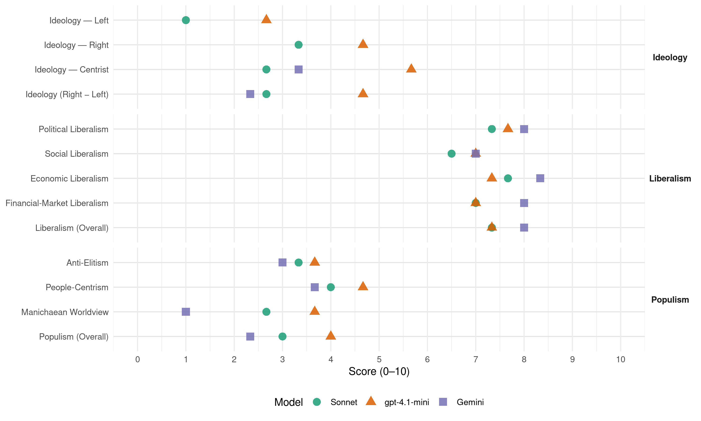

PP (Spain, 2011)
manifesto_id 33610_201111
Get full text: This site shows derived annotations and short verbatim quotes only. The full manifesto text is © Manifesto Project / WZB — obtain it via manifesto-project.wzb.eu using the manifesto_id above.
Headline scores
| Dimension | Sonnet | gpt-4.1-mini | Gemini |
|---|---|---|---|
| Populism (Overall) | 3.0 | 4.0 | 2.3 |
| Anti-Elitism | 3.3 | 3.7 | 3.0 |
| People-Centrism | 4.0 | 4.7 | 3.7 |
| Manichaean Worldview | 2.7 | 3.7 | 1.0 |
| Ideology (Right − Left) | 2.7 | 4.7 | 2.3 |
| Liberalism (Overall) | 7.3 | 7.3 | 8.0 |
| Political Liberalism | 7.3 | 7.7 | 8.0 |
| Social Liberalism | 6.5 | 7.0 | 7.0 |
| Economic Liberalism | 7.7 | 7.3 | 8.3 |
| Financial-Market Liberalism | 7.0 | 7.0 | 8.0 |
Evidence per dimension
Economic Liberalism
Gemini · score 9.0 · verified · chunk 1
“fomentar la competencia y garantizar la igualdad”
mecanismos interterritoriales de solución de conflictos para asegurar la libertad económica, fomentar la competencia y garantizar la igualdad en el acceso
Gemini · score 8.0 · verified · chunk 2
“fomento del espíritu empresarial”
mejora de la innovación, desarrollo tecnológico y fomento del espíritu empresarial, donde la pequeña
Gemini · score 8.0 · verified · chunk 3
“liberalización de los sectores de telecomunicaciones”
unidad de mercado. Avanzaremos en la liberalización de los sectores de telecomunicaciones, energía y postal,
gpt-4.1-mini · score 8.0 · verified · chunk 1
“Una política fiscal y presupuestaria decidida a atajar el déficit estructural”
Una política fiscal y presupuestaria decidida a atajar el déficit estructural de las cuentas públicas. Una reforma del sector financiero que permita el acceso de empresas y particulares a una financiación en condiciones internacionalmente competitivas.
gpt-4.1-mini · score 7.0 · verified · chunk 2
“Impulsaremos una política industrial decidida, acorde con el contexto internacional”
Para alcanzar este objetivo, impulsaremos una política industrial decidida, acorde con el contexto internacional, al servicio del crecimiento económico y el empleo, y que contribuya a generar un tejido industrial competitivo y equilibrado.
gpt-4.1-mini · score 7.0 · verified · chunk 3
“Avanzaremos en la liberalización de los sectores de telecomunicaciones, energía y postal”
Avanzaremos en la liberalización de los sectores de telecomunicaciones, energía y postal, estableciendo como prioridad básica el desarrollo de la competencia. Ordenaremos los órganos reguladores para fortalecer la aplicación de la normativa de competencia en todos los ámbitos, bajo criterios comunes en todos los sectores y para todo el territorio nacional, favoreciendo la unidad de mercado.
Sonnet · score 8.0 · verified · chunk 1
“liberalización de mercados permitirán la redefinición”
Los programas de reforma y reestructuración de la administración y de liberalización de mercados permitirán la redefinición de los ámbitos de actuación pública.
Sonnet · score 7.0 · verified · chunk 2
“simplificación del marco regulatorio”
facilitar la innovación, los procesos de crecimiento empresarial, el aumento de la intensidad exportadora y la simplificación del marco regulatorio.
Sonnet · score 8.0 · verified · chunk 3
“liberalización de los sectores de telecomunicaciones, energía y postal”
Avanzaremos en la liberalización de los sectores de telecomunicaciones, energía y postal, estableciendo como prioridad básica el desarrollo de la competencia.
Financial-Market Liberalism
Gemini · score 8.0 · verified · chunk 1
“saneamiento y la reestructuración del sistema financiero”
Culminaremos el saneamiento y la reestructuración del sistema financiero. Facilitaremos la gestión activa del patrimonio
Gemini · score 8.0 · verified · chunk 3
“mercado interior de servicios financieros”
saneamiento de los bancos europeos, la culminación del mercado interior de servicios financieros y los avances hacia
gpt-4.1-mini · score 8.0 · verified · chunk 1
“Reforzaremos y exigiremos las responsabilidades debidas a aquellos gestores”
Aceleraremos la reforma de las cajas de ahorros para garantizar la mejor gestión posible de la actividad bancaria con reglas de mercado, y para separar la obra social de la actividad financiera. Reforzaremos y exigiremos las responsabilidades debidas a aquellos gestores que hayan incurrido en una administración desleal o negligente.
gpt-4.1-mini · score 6.0 · verified · chunk 3
“Apoyaremos el saneamiento de los bancos europeos, la culminación del mercado interior”
Apoyaremos el saneamiento de los bancos europeos, la culminación del mercado interior de servicios financieros y los avances hacia una supervisión auténticamente integrada. Regularemos los productos derivados y las ventas a corto y fomentaremos la transparencia en las relaciones entre las entidades financieras y sus clientes.
Sonnet · score 7.0 · verified · chunk 1
“transparencia de los mercados y protección de los consumidores”
Desarrollaremos una política financiera activa, con una mayor capacidad de anticipación y prevención en torno a tres grandes ejes: estabilidad financiera, transparencia de los mercados y protección de los consumidores.
Sonnet · score 7.0 · verified · chunk 2
“costes del capital y de producción más caros”
Acometeremos las reformas estructurales necesarias para que las empresas españolas no se enfrenten a costes del capital y de producción más caros que sus competidores.
Sonnet · score 7.0 · verified · chunk 3
“culminación del mercado interior de servicios financieros”
Apoyaremos el saneamiento de los bancos europeos, la culminación del mercado interior de servicios financieros y los avances hacia una supervisión auténticamente integrada.
Political Liberalism
Gemini · score 8.0 · verified · chunk 1
“hemos sabido construir una democracia respetada”
Hemos sabido construir una democracia respetada y admirada; modernizar nuestra economía y crear empleo.
Gemini · score 8.0 · verified · chunk 2
“valores constitucionales y en el conocimiento”
basado en el aprendizaje de los valores constitucionales y en el conocimiento de las instituciones españolas
Gemini · score 8.0 · verified · chunk 3
“fortalecer las instituciones democráticas”
grave peligro. Se trata de fortalecer las instituciones democráticas, no de negar su legitimidad;
gpt-4.1-mini · score 8.0 · verified · chunk 1
“Hemos sabido construir una democracia respetada y admirada”
Los españoles hemos sabido superar dificultades en el pasado. Hemos sabido construir una democracia respetada y admirada; modernizar nuestra economía y crear empleo.
gpt-4.1-mini · score 7.0 · verified · chunk 2
“Garantizaremos el derecho de los ciudadanos a acceder a la información pública”
Garantizaremos el derecho de los ciudadanos a acceder a la información pública y articularemos mecanismos eficaces para la tutela de este derecho. Se aprobará un nuevo marco legal cuyo exacto cumplimiento será exigible a todos los responsables públicos, en todas las administraciones.
gpt-4.1-mini · score 8.0 · verified · chunk 3
“la transparencia es un requisito imprescindible para la buena administración”
La transparencia es un requisito imprescindible para la buena administración de los recursos, para garantizar el más honrado comportamiento de todos los servidores públicos y una mejor participación de los ciudadanos. Transparencia significa el fácil acceso a toda información relevante, de manera clara y comprensible.
Sonnet · score 7.0 · verified · chunk 1
“fortalecimiento institucional y la regeneración política”
El fortalecimiento institucional y la regeneración política. Necesitamos instituciones fiables, previsibles, la vuelta al respeto a la ley y a la seguridad jurídica.
Sonnet · score 7.0 · verified · chunk 2
“ley de transparencia, acceso a la información pública”
Aprobaremos con carácter inmediato y de acuerdo con los principios que inspiran el Convenio Europeo sobre Acceso a los Documentos Públicos, una ley de transparencia, acceso a la información pública y buen gobierno.
Sonnet · score 8.0 · verified · chunk 3
“fortalecer las instituciones democráticas”
Se trata de fortalecer las instituciones democráticas, no de negar su legitimidad; se trata de mejorar los procesos de deliberación y acuerdo, no de suplantarlos.
Liberalism (Overall)
Gemini · score 8.0 · verified · chunk 1
“fomentar la competencia y garantizar la igualdad”
mecanismos interterritoriales de solución de conflictos para asegurar la libertad económica, fomentar la competencia y garantizar la igualdad en el acceso
Gemini · score 8.0 · verified · chunk 2
“fomento del espíritu empresarial”
mejora de la innovación, desarrollo tecnológico y fomento del espíritu empresarial, donde la pequeña
Gemini · score 8.0 · verified · chunk 3
“liberalización de los sectores de telecomunicaciones”
unidad de mercado. Avanzaremos en la liberalización de los sectores de telecomunicaciones, energía y postal,
gpt-4.1-mini · score 8.0 · verified · chunk 1
“Una política fiscal y presupuestaria decidida a atajar el déficit estructural”
Una política fiscal y presupuestaria decidida a atajar el déficit estructural de las cuentas públicas. Una reforma del sector financiero que permita el acceso de empresas y particulares a una financiación en condiciones internacionalmente competitivas.
gpt-4.1-mini · score 7.0 · verified · chunk 2
“Impulsaremos una política industrial decidida, acorde con el contexto internacional”
Para alcanzar este objetivo, impulsaremos una política industrial decidida, acorde con el contexto internacional, al servicio del crecimiento económico y el empleo, y que contribuya a generar un tejido industrial competitivo y equilibrado.
gpt-4.1-mini · score 7.0 · verified · chunk 3
“la transparencia es un requisito imprescindible para la buena administración”
La transparencia es un requisito imprescindible para la buena administración de los recursos, para garantizar el más honrado comportamiento de todos los servidores públicos y una mejor participación de los ciudadanos. Transparencia significa el fácil acceso a toda información relevante, de manera clara y comprensible.
Sonnet · score 7.0 · verified · chunk 1
“competencia y unidad del mercado”
Reforzaremos los mecanismos de regulación y competencia mediante la reforma de la Comisión Nacional de la Competencia… bajo los principios de competencia y unidad del mercado.
Sonnet · score 7.0 · verified · chunk 2
“pleno respeto a los mecanismos de mercado”
flexibilidad, agilidad, mínima intervención y pleno respeto a los mecanismos de mercado. Necesitamos normas claras, precisas, estables y fácilmente aplicables
Sonnet · score 8.0 · verified · chunk 3
“desarrollo de la competencia”
Avanzaremos en la liberalización de los sectores de telecomunicaciones, energía y postal, estableciendo como prioridad básica el desarrollo de la competencia.
Anti-Elitism
Gemini · score 3.0 · verified · chunk 1
“un mal gobierno que no genera la confianza”
En definitiva, un mal gobierno que no genera la confianza necesaria para que el país obtenga el crédito
Gemini · score 3.0 · verified · chunk 3
“apropiación partidista de los poderes”
pérdida del sentido de Estado, de apropiación partidista de los poderes y de políticas de exclusión.
gpt-4.1-mini · score 7.0 · verified · chunk 1
“La incapacidad del partido socialista para hacerle frente ha llevado a España a una situación insostenible”
Más sociedad,mejor gobierno España necesita el cambio. Los españoles estamos padeciendo una crisis sin precedentes. La incapacidad del partido socialista para hacerle frente ha llevado a España a una situación insostenible que es necesario superar cuanto antes.
gpt-4.1-mini · score 2.0 · verified · chunk 2
“La crisis está dañando las expectativas que los españoles tienen sobre su futuro”
La crisis está dañando las expectativas que los españoles tienen sobre su futuro. Pero nuestra sociedad no es tan distinta a la de hace unos años. Seguimos teniendo los mimbres de un país que generó admiración en el exterior, y debemos realizar un gran esfuerzo colectivo para recomponer una sociedad que no debería continuar en el pesimismo.
gpt-4.1-mini · score 2.0 · verified · chunk 3
“la política del gobierno socialista la que se ha alejado de ellos”
De la patrimonialización de la política nace la falta de responsabilidad y la postergación del interés público. Los ciudadanos no se han alejado de la política. Es la política del gobierno socialista la que se ha alejado de ellos. Han convertido la política en un fin más atento a sus pactos de supervivencia que a sus responsabilidades hacia todos los españoles.
Sonnet · score 4.0 · verified · chunk 1
“el partido socialista ha perdido la credibilidad”
Frente a la crisis económica, la respuesta consistió inicialmente en negarla… El partido socialista ha perdido la credibilidad y la confianza de la sociedad.
Sonnet · score 2.0 · verified · chunk 2
“modelo educativo socialista vigente desde hace más de dos décadas”
Éste es el balance del modelo educativo socialista vigente desde hace más de dos décadas. Tiene unas consecuencias muy negativas para el crecimiento económico
Sonnet · score 4.0 · verified · chunk 3
“la política del gobierno socialista la que se ha alejado”
Los ciudadanos no se han alejado de la política. Es la política del gobierno socialista la que se ha alejado de ellos. Han convertido la política en un fin más atento a sus pactos de supervivencia
Ideology — Centrist
Gemini · score 4.0 · verified · chunk 1
“Gobernar desde el centro y para todos”
El Partido Popular ofrece a los españoles otra forma de gobernar. Gobernar desde el centro y para todos, con moderación y diálogo.
Gemini · score 3.0 · verified · chunk 2
“Nosotros confiamos en la gente”
momento de la sociedad. Nosotros confiamos en la gente. La salida de la crisis es
Gemini · score 3.0 · verified · chunk 3
“política no es patrimonio de los políticos”
responsabilidades hacia todos los españoles. La política no es patrimonio de los políticos sino de los ciudadanos.
gpt-4.1-mini · score 8.0 · verified · chunk 1
“Gobernar desde el centro y para todos, con moderación y diálogo”
El Partido Popular ofrece a los españoles otra forma de gobernar. Gobernar desde el centro y para todos, con moderación y diálogo. Gobernar con honradez, responsabilidad y buen criterio.
gpt-4.1-mini · score 5.0 · verified · chunk 2
“Queremos que España sea un país de integración y de oportunidades para todos”
Queremos que España sea un país de integración y de oportunidades para todos. En el Partido Popular creemos que la principal vía de integración de los inmigrantes es el empleo; su disposición a trabajar y sus cualificaciones son activos muy útiles para salir de la crisis.
gpt-4.1-mini · score 4.0 · verified · chunk 3
“la política no es patrimonio de los políticos sino de los ciudadanos”
Los ciudadanos no se han alejado de la política. Es la política del gobierno socialista la que se ha alejado de ellos. Han convertido la política en un fin más atento a sus pactos de supervivencia que a sus responsabilidades hacia todos los españoles. La política no es patrimonio de los políticos sino de los ciudadanos.
Sonnet · score 4.0 · verified · chunk 1
“Gobernar desde el centro y para todos”
El Partido Popular ofrece a los españoles otra forma de gobernar. Gobernar desde el centro y para todos, con moderación y diálogo.
Sonnet · score 2.0 · verified · chunk 2
“todos los grandes partidos europeos de centro”
El Partido Popular, como todos los grandes partidos europeos de centro, cree que todo lo que la sociedad puede hacer por sí misma
Sonnet · score 2.0 · verified · chunk 3
“Promoveremos un gran pacto”
Promoveremos un gran pacto con el objetivo de iniciar un proceso de reformas encaminadas a mejorar el funcionamiento de las instituciones públicas
Ideology — Left
gpt-4.1-mini · score 3.0 · verified · chunk 1
“El balance de los últimos años resulta desolador: cinco millones de parados”
El balance de los últimos años resulta desolador: cinco millones de parados, casi un millón y medio de hogares con todos sus miembros desempleados, un sistema educativo incapaz de proporcionar oportunidades, una generación de jóvenes expulsada del mercado laboral, y unas cuentas públicas fuera de control.
gpt-4.1-mini · score 3.0 · verified · chunk 2
“Impulsaremos una formación profesional de calidad y atractiva, desarrollada en gran medida en los centros de trabajo”
Impulsaremos una formación profesional de calidad y atractiva, desarrollada en gran medida en los centros de trabajo, que incentive la permanencia de los jóvenes en el sistema educativo, ampliando sus oportunidades laborales.
gpt-4.1-mini · score 2.0 · verified · chunk 3
“la política del gobierno socialista la que se ha alejado de ellos”
De la patrimonialización de la política nace la falta de responsabilidad y la postergación del interés público. Los ciudadanos no se han alejado de la política. Es la política del gobierno socialista la que se ha alejado de ellos. Han convertido la política en un fin más atento a sus pactos de supervivencia que a sus responsabilidades hacia todos los españoles.
Sonnet · score 1.0 · verified · chunk 1
“liberalización de la economía”
promoveremos la formación, la innovación empresarial, la internacionalización, la liberalización de la economía y la estabilidad y flexibilización del mercado de trabajo
Sonnet · score 1.0 · verified · chunk 2
“garantizar el Estado del Bienestar”
Nuestro principal objetivo en política social es garantizar el Estado del Bienestar. Una equivocada política económica está privando de ingresos
Sonnet · score 1.0 · verified · chunk 3
“Fomentaremos la colaboración público-privada”
Fomentaremos la colaboración público-privada para la gestión de infraestructuras y servicios públicos.
Ideology (Right − Left)
Gemini · score 3.0 · verified · chunk 1
“Gobernar desde el centro y para todos”
El Partido Popular ofrece a los españoles otra forma de gobernar. Gobernar desde el centro y para todos, con moderación y diálogo.
Gemini · score 2.0 · verified · chunk 2
“Nosotros confiamos en la gente”
momento de la sociedad. Nosotros confiamos en la gente. La salida de la crisis es
Gemini · score 2.0 · verified · chunk 3
“política no es patrimonio de los políticos”
responsabilidades hacia todos los españoles. La política no es patrimonio de los políticos sino de los ciudadanos.
gpt-4.1-mini · score 6.0 · verified · chunk 1
“Gobernar desde el centro y para todos, con moderación y diálogo”
El Partido Popular ofrece a los españoles otra forma de gobernar. Gobernar desde el centro y para todos, con moderación y diálogo. Gobernar con honradez, responsabilidad y buen criterio.
gpt-4.1-mini · score 5.0 · verified · chunk 2
“Queremos que España sea un país de integración y de oportunidades para todos”
Queremos que España sea un país de integración y de oportunidades para todos. En el Partido Popular creemos que la principal vía de integración de los inmigrantes es el empleo; su disposición a trabajar y sus cualificaciones son activos muy útiles para salir de la crisis.
gpt-4.1-mini · score 3.0 · verified · chunk 3
“la política del gobierno socialista la que se ha alejado de ellos”
De la patrimonialización de la política nace la falta de responsabilidad y la postergación del interés público. Los ciudadanos no se han alejado de la política. Es la política del gobierno socialista la que se ha alejado de ellos. Han convertido la política en un fin más atento a sus pactos de supervivencia que a sus responsabilidades hacia todos los españoles.
Sonnet · score 3.0 · verified · chunk 1
“proyecto con todos, de todos y para todos”
Un proyecto con todos, de todos y para todos, que es lo que los españoles quieren y merecen. Sin exclusiones ni sectarismos
Sonnet · score 2.0 · verified · chunk 2
“modelo educativo socialista vigente desde hace más de dos décadas”
Éste es el balance del modelo educativo socialista vigente desde hace más de dos décadas. Tiene unas consecuencias muy negativas
Sonnet · score 3.0 · verified · chunk 3
“regeneración significa centrar la política”
Para el Partido Popular la regeneración significa centrar la política en las verdaderas preocupaciones de los ciudadanos
Ideology — Right
gpt-4.1-mini · score 5.0 · verified · chunk 1
“Gobernar desde el centro y para todos, con moderación y diálogo”
El Partido Popular ofrece a los españoles otra forma de gobernar. Gobernar desde el centro y para todos, con moderación y diálogo. Gobernar con honradez, responsabilidad y buen criterio.
gpt-4.1-mini · score 6.0 · verified · chunk 2
“Promoveremos la actualización de nuestro derecho de familia para adaptarlo a las nuevas realidades sociales”
Promoveremos la actualización de nuestro derecho de familia para adaptarlo a las nuevas realidades sociales, favoreciendo la mediación y la corresponsabilidad de los padres, y salvaguardando los derechos e intereses del menor.
gpt-4.1-mini · score 3.0 · verified · chunk 3
“No negociaremos con terroristas ni por la presión de la violencia”
No negociaremos con terroristas ni por la presión de la violencia ni por el anuncio de su cese. Éste será un principio básico de la política de seguridad del Estado. Fortaleceremos la colaboración internacional, bilateral y multilateral, y los instrumentos europeos de cooperación policial y judicial.
Sonnet · score 3.0 · verified · chunk 1
“vocación europea de España”
El Partido Popular va a revitalizar la vocación europea de España mediante un acuerdo nacional para Europa, cuyo centro hoy es el euro
Sonnet · score 3.0 · verified · chunk 2
“inmigración legal y ordenada”
Queremos una inmigración legal y ordenada, en coherencia con las políticas adoptadas por la Unión Europea.
Sonnet · score 4.0 · verified · chunk 3
“No negociaremos con terroristas”
No negociaremos con terroristas ni por la presión de la violencia ni por el anuncio de su cese. Éste será un principio básico de la política de seguridad del Estado.
Manichaean Worldview
Gemini · score 1.0 · verified · chunk 1
“superaremos la ruinosa herencia recibida”
Con una clara estrategia y con visión de futuro para España superaremos la ruinosa herencia recibida. La recuperación del potencial
gpt-4.1-mini · score 6.0 · verified · chunk 1
“El partido socialista ha separado a España de su senda reformista y de modernización”
Renunciando al consenso y a la continuidad institucional, que son parte del mejor acervo de la España constitucional, el partido socialista ha separado a España de su senda reformista y de modernización para llevarla al empobrecimiento, al desprestigio de sus instituciones y a la irrelevancia internacional.
gpt-4.1-mini · score 2.0 · verified · chunk 2
“La crisis y su gestión han hecho añicos los logros de muchas familias”
La crisis y su gestión han hecho añicos los logros de muchas familias y este sueño colectivo. Hoy la sociedad española tiene que enfrentarse a una situación que no termina de comprender.
gpt-4.1-mini · score 3.0 · verified · chunk 3
“Los discursos que descalifican globalmente la política y a los políticos”
Los discursos que descalifican globalmente la política y a los políticos sin ofrecer alternativa encierran un grave peligro. Se trata de fortalecer las instituciones democráticas, no de negar su legitimidad; se trata de mejorar los procesos de deliberación y acuerdo, no de suplantarlos.
Sonnet · score 3.0 · verified · chunk 1
“siete años de mal gobierno”
no será lo mismo hacerle frente desde la situación en la que se encuentra España después de siete años de mal gobierno que hacerlo desde la situación
Sonnet · score 2.0 · verified · chunk 2
“gobierno socialista ha congelado las pensiones”
Los pensionistas, están sufriendo especialmente los efectos de la crisis y el gobierno socialista ha congelado las pensiones.
Sonnet · score 3.0 · verified · chunk 3
“obsesiones ideológicas y la satisfacción de intereses minoritarios”
han sido desatendidas por las conveniencias de partido, las obsesiones ideológicas y la satisfacción de intereses minoritarios. Se han dilapidado demasiadas energías colectivas
People-Centrism
Gemini · score 4.0 · verified · chunk 1
“los ciudadanos sean protagonistas de su propio futuro”
Queremos una España en la que los ciudadanos sean protagonistas de su propio futuro. En situaciones de crisis
Gemini · score 3.0 · verified · chunk 2
“Nosotros confiamos en la gente”
momento de la sociedad. Nosotros confiamos en la gente. La salida de la crisis es
Gemini · score 4.0 · verified · chunk 3
“política no es patrimonio de los políticos”
responsabilidades hacia todos los españoles. La política no es patrimonio de los políticos sino de los ciudadanos.
gpt-4.1-mini · score 8.0 · verified · chunk 1
“Los españoles hemos sabido superar dificultades en el pasado”
Los españoles hemos sabido superar dificultades en el pasado. Hemos sabido construir una democracia respetada y admirada; modernizar nuestra economía y crear empleo.
gpt-4.1-mini · score 3.0 · verified · chunk 2
“Nosotros confiamos en la gente. La salida de la crisis es responsabilidad de todos”
Es el momento de la sociedad. Nosotros confiamos en la gente. La salida de la crisis es responsabilidad de todos, ya que todos tenemos que adaptarnos y dar lo mejor de nosotros mismos para construir un futuro mejor.
gpt-4.1-mini · score 3.0 · verified · chunk 3
“la política no es patrimonio de los políticos sino de los ciudadanos”
Los ciudadanos no se han alejado de la política. Es la política del gobierno socialista la que se ha alejado de ellos. Han convertido la política en un fin más atento a sus pactos de supervivencia que a sus responsabilidades hacia todos los españoles. La política no es patrimonio de los políticos sino de los ciudadanos.
Sonnet · score 5.0 · verified · chunk 1
“la sociedad tiene que ser la protagonista del cambio”
Hoy nuevamente la sociedad tiene que ser la protagonista del cambio. En la sociedad, en las familias españolas, están las energías, las iniciativas, las capacidades
Sonnet · score 3.0 · verified · chunk 2
“Nosotros confiamos en la gente”
Es el momento de la sociedad. Nosotros confiamos en la gente. La salida de la crisis es responsabilidad de todos
Sonnet · score 4.0 · verified · chunk 3
“La política no es patrimonio de los políticos sino de los ciudadanos”
Han convertido la política en un fin más atento a sus pactos de supervivencia que a sus responsabilidades hacia todos los españoles. La política no es patrimonio de los políticos sino de los ciudadanos.
Populism (Overall)
Gemini · score 3.0 · verified · chunk 1
“un mal gobierno que no genera la confianza”
En definitiva, un mal gobierno que no genera la confianza necesaria para que el país obtenga el crédito
Gemini · score 2.0 · verified · chunk 2
“Nosotros confiamos en la gente”
momento de la sociedad. Nosotros confiamos en la gente. La salida de la crisis es
Gemini · score 2.0 · verified · chunk 3
“apropiación partidista de los poderes”
pérdida del sentido de Estado, de apropiación partidista de los poderes y de políticas de exclusión.
gpt-4.1-mini · score 7.0 · verified · chunk 1
“El partido socialista ha separado a España de su senda reformista y de modernización”
Renunciando al consenso y a la continuidad institucional, que son parte del mejor acervo de la España constitucional, el partido socialista ha separado a España de su senda reformista y de modernización para llevarla al empobrecimiento, al desprestigio de sus instituciones y a la irrelevancia internacional.
gpt-4.1-mini · score 2.0 · verified · chunk 2
“Nosotros confiamos en la gente. La salida de la crisis es responsabilidad de todos”
Es el momento de la sociedad. Nosotros confiamos en la gente. La salida de la crisis es responsabilidad de todos, ya que todos tenemos que adaptarnos y dar lo mejor de nosotros mismos para construir un futuro mejor.
gpt-4.1-mini · score 3.0 · verified · chunk 3
“la política del gobierno socialista la que se ha alejado de ellos”
De la patrimonialización de la política nace la falta de responsabilidad y la postergación del interés público. Los ciudadanos no se han alejado de la política. Es la política del gobierno socialista la que se ha alejado de ellos. Han convertido la política en un fin más atento a sus pactos de supervivencia que a sus responsabilidades hacia todos los españoles.
Sonnet · score 4.0 · verified · chunk 1
“mal gobierno que no genera la confianza”
un mal gobierno que no genera la confianza necesaria para que el país obtenga el crédito que precisa y que pone en riesgo real las prestaciones básicas
Sonnet · score 2.0 · verified · chunk 2
“Nosotros confiamos en la gente”
Es el momento de la sociedad. Nosotros confiamos en la gente. La salida de la crisis es responsabilidad de todos
Sonnet · score 3.0 · verified · chunk 3
“centrar la política en las verdaderas preocupaciones de los ciudadanos”
Para el Partido Popular la regeneración significa centrar la política en las verdaderas preocupaciones de los ciudadanos, que durante este periodo de gobierno socialista han sido desatendidas
Social Liberalism